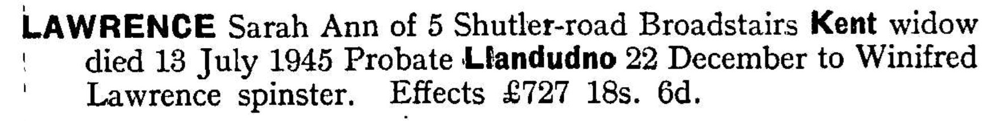
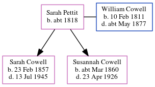

Sarah Ann Lawrence (née Cowell) 1857 - 1945
[ Home ] | [ Calendar ] | [ Surnames Index ] | [ Errors ] | [ Family History ]The child of William Cowell (a mariner) and Sarah Pettit, Sarah Cowell, the second cousin three-times-removed on the mother's side of Nigel Horne, was born in Broadstairs, Kent, England on 23 Feb 18571,2,3,4, was baptised there at Holy Trinity Church on 29 Mar 1857 and married Thomas Lawrence (a manager of wholesale newsagent and stationery business with whom she had 2 children: Ernest Edward and Winifred) in Thanet, Kent, England around Feb 18817.
During her life, she was living at 1 Nelson Place, St Peters in Thanet on 7 Apr 18619 and on 2 Apr 18718; at Watson Road, Ecclesall, South Yorkshire, England on 31 Mar 190110; at 50 Southgrove Road, Broomhall, South Yorkshire on 2 Apr 19111; and at 5 Shutler Road in Broadstairs on 29 Sept 19392 and in 1945.
She died on 13 Jul 1945 in Thanet5,6.
Parents
- William Castle was born on 10 Feb 1811
- Sarah Ann was born c. 1818
Children
- Ernest Edward was born in 1882
- Winifred was born in 1886
Citations
- 1911 Census for England & Wales - Findmypast (was age 54 and the wife of the head of the household)
- 1939 Register - Findmypast (was recorded at this address)
- England & Wales births 1837-2006 - Findmypast
- Kent, Canterbury Archdeaconry Baptisms - Findmypast
- England & Wales Government Probate Death Index 1858-2019 - Findmypast
- England & Wales deaths 1837-2007 - Findmypast
- England & Wales Marriages 1837-2005 - Findmypast
- 1871 England, Wales & Scotland Census - Findmypast (was age 14 and the daughter of the head of the household)
- 1861 England, Wales & Scotland Census - Findmypast (was age 4 and the daughter of the head of the household)
- 1901 England, Wales & Scotland Census - Findmypast (was age 43 and the wife of the head of the household)
Media
Sarah Ann Cowell - probate

1871 England, Wales & Scotland Census - GBC/1871/0014311080
England & Wales births 1837-2006 - BMD/B/1857/1/AF/000876/029
Kent, Canterbury Archdeaconry baptisms - GBPRS/CANT/B/96312274
England & Wales marriages 1837-2005 - BMD/M/1881/1/AZ/000048/185
1861 England, Wales & Scotland Census - GBC-1861-0003552702
England Births & Baptisms 1538-1975 - R_884048463
England Births & Baptisms 1538-1975 - R_937836052
England & Wales deaths 1837-2007 - BMD/D/1945/3/AZ/000485/141
1939 Register - TNA-R39-1685-1685G-022-15
England & Wales Government Probate Death Index 1858-2019 - GBOR/GOVPROBATE/C/1945-1945/00100335
1901 England, Wales & Scotland Census - GBC/1901/0027278336
1911 Census for England & Wales - GBC/1911/RG14/27846/0105/2
Family Tree
Map
Generated by ged2site. Last updated on Jul 3, 2024
Known Issues
Residence record for 1945 contains no citation
Listed in the residence for 29 Sep 1939, but spouse Thomas Lawrence is not
Listed in the residence for 1945, but spouse Thomas Lawrence is not